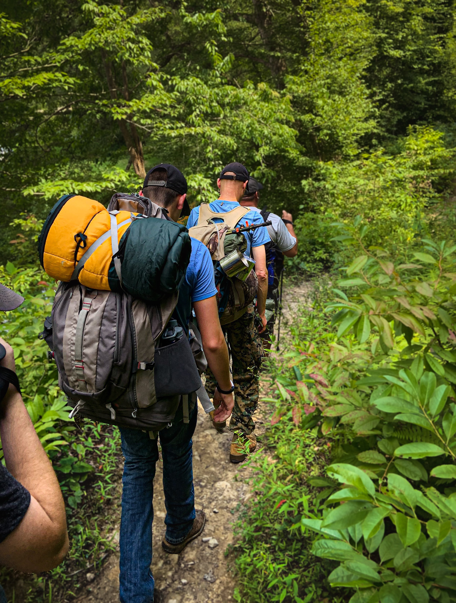
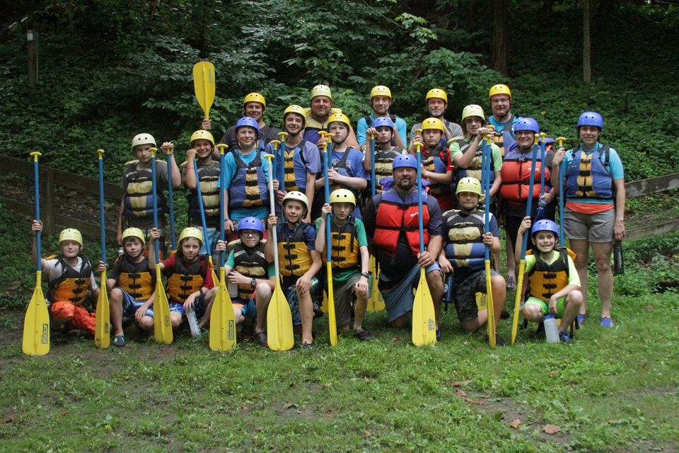

A hiking trip on 21/11/2021 (Back to front: Stephen H, Carter P, Braden S)
information pending
A flag retirement from around 2019 (Left to right: Roy M, Jakob A, Austin S (me), Braden S)

These photos are all post-2014. For pre-2014 photos, view the Photo Archives or you can return here.
|  | |
A hiking trip on 21/11/2021 (Back to front: Stephen H, Carter P, Braden S) | information pending | A flag retirement from around 2019 (Left to right: Roy M, Jakob A, Austin S (me), Braden S) |
|  | | |
White water rafting in West Virginia during the World Jamboree. | Braden doing Braden things |